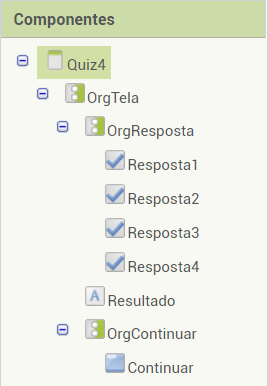

Confira nosso aplicativo para android
BAIXE JÁAprenda desenvolvimento sustentavel de uma maneira divertida e na palma da sua mão com nosso Quiz ecológico
O aplicativo tem a mesma temática do site, que é consumismo responsável, ele é composto de 6 telas, todos com fundo de tela feitos a partir do Canva.
O Quiz1, Quiz2, Quiz3 consistem na pergunta que está embutida no estilo do fundo de tela, 4 caixas de seleção com as possíveis respostas, o botão “próxima pergunta”, que leva até a próxima tela e uma legenda oculta que é o resultado, o qual só aparece quando uma caixa de seleção é selecionada, falando se o usuário acertou ou errou a questão e falando qual é a resposta correta.
A quiz4 tem a mesma estrutura das outras 3 telas de quiz, a única diferença é que ela vai redirecionar para a tela de resultados, então o botão “Próxima pergunta” se tornou o botão “Resultado”.
A tela de Resultado vai trazer o valor da pontuação que a global pontos contabilizou e dois botões, o “Jogar novamente” que leva a tela do Quiz1 e o “Sair do aplicativo” que fecha o app.